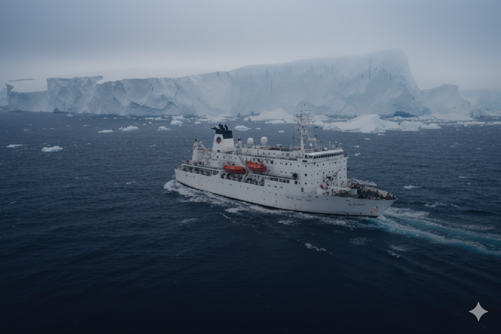

Research Vessel Noosfera
Multi-Whale Detection and Tracking with Noosfera
Together with the National Antarctic Scientific Center of Ukraine, we deployed our AI system aboard the research vessel Noosfera for real-time detection and tracking of cetaceans across vast oceanic regions, enabling better conservation efforts and behavioral research in Antarctic waters.